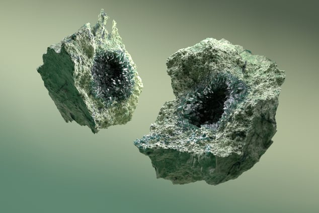

Five proof points that Germany's innovation pipeline is deeper — and more investable — than the world realises.
Geothermal energy is CO₂-free, always-on, and land-efficient. The barrier has always been cost. Two German startups are about to change that.

Developing high-powered laser drilling systems that keep sensitive technology above ground — transmitting energy downward through optical systems. Contactless drilling dramatically reduces costs and enables sites previously considered unviable.
"Drilling costs make up 30–70% of total capex. We are fixing that." — Max Werner, CEO
Born from research at KIT and TU Dresden, Telura uses high-voltage electrical impulses to fracture rock from the inside out — like breaking it with lightning. Claims up to 90% reduction in drilling costs.
Microwave-based rock melting derived from fusion research. Acknowledged by Hades CEO as a "clever approach" — illustrating global convergence around the same problem that German labs are solving.
Not chatbots. Not hype. Foundation models, sovereign infrastructure, and defence AI — built by the researchers who wrote the papers that defined modern deep learning.
Founded by the team behind Stable Diffusion, BFL's FLUX model family leads independent benchmarks for image generation quality — outperforming Midjourney and DALL-E on multiple metrics. Open-weight by default; enterprise API for revenue.
"We did not want to build another chatbot. We wanted to build the best image generation model in the world — and make it open." — Robin Rombach, Co-founder
PhariaAI platform — designed for GDPR compliance, explainability, and regulated industries. Contracts with German federal government and Bundeswehr-affiliated institutions. The trusted European alternative to US hyperscaler AI.
Europe's leading defence AI company. AI-enabled signal processing and situational awareness for military platforms — directly benefiting from Germany's Zeitenwende defence reorientation and growing European sovereign capability requirements.
Germany is investing over €20 billion in semiconductor sovereignty. From Aachen's graphene photonics startup to Munich's SiC powerhouse and Dresden's new €10B foundry — the foundations of Europe's chip future are being built here.
Spun out of the AMO research centre in Aachen, Black Semiconductor is building the world's first graphene photonics chip — replacing electrical signals between chips with light, enabling dramatically faster and more energy-efficient data centres and AI hardware. A 300mm wafer pilot line (FabONE) is under construction, with pilot production targeted for 2027 and volume production from 2029.
"We are not improving silicon — we are replacing the interconnect layer entirely with light."
Germany's largest semiconductor company and the global leader in Silicon Carbide (SiC) power chips — the critical component in EV drivetrains, renewable energy inverters, and AI power systems. In 2025, Infineon backed its SiC rollout with €5 billion in customer commitments, targeting 30% global SiC market share by 2030. Also acquired Marvell's Automotive Ethernet unit for $2.5B to lead the software-defined vehicle era.
The European Semiconductor Manufacturing Company — a joint venture of TSMC, Bosch, Infineon, and NXP — is building Europe's most advanced chip foundry in Dresden. Structural construction is complete; equipment move-in begins 2H 2026, with first wafer production targeted for 2027. The fab will produce 28/22nm and 16/12nm FinFET chips — making Dresden Europe's answer to Taiwan's silicon dominance.
Quantum computing promises to solve problems classical computers never can — in drug discovery, logistics, materials science, and cryptography. Germany is investing at national scale to own this frontier.
Europe's leading quantum hardware company, building superconducting quantum processors for research institutions and national supercomputing centres. IQM systems are deployed at Finnish and German supercomputing hubs — the first commercially operating quantum computers on European soil.
"We are building the hardware layer of Europe's quantum future — and we are building it in Munich." — Jan Goetz, CEO & Co-founder
Germany's Fraunhofer Institute for Applied Solid State Physics develops quantum sensor technology and photonic chips — core components for quantum communications and navigation systems that do not rely on GPS or foreign satellite infrastructure.
A quantum algorithm marketplace funded by Germany's Federal Ministry of Economic Affairs — connecting quantum software developers with hardware providers and enterprise customers. Germany's answer to building a quantum ecosystem rather than isolated labs.
Artificial skin that senses. Diagnostic AI that outperforms radiologists. Germany's biomedical engineering frontier is redefining what healthcare technology means.
Developing artificial skin with embedded sensors capable of detecting pressure, temperature, and chemical signals — with applications in prosthetics, robotics, and human-machine interfaces. Simultaneously advancing diagnostic AI models that match or exceed specialist-level accuracy.
"Germany's research universities don't produce papers. They produce companies."
Industrial exoskeleton systems that augment human workers in manufacturing and logistics environments — reducing injury, increasing output, and demonstrating how Germany's engineering culture extends into human augmentation technology.
Germany produces 39% of Europe's entire photonics output — €50 billion in annual sales. From the world's largest industrial laser manufacturer to quantum-ready glass components, German light technology is reshaping semiconductors, manufacturing, and defence.
The world's largest industrial laser manufacturer. TRUMPF's laser systems power semiconductor fabs, automotive production lines, and — increasingly — European defence applications. In 2025, TRUMPF launched a quantum computing consortium with Fraunhofer ILT to use quantum algorithms to design fundamentally better lasers.
"Photonics is not a niche — it is the enabling technology of the 21st century."
A global photonics group specialising in semiconductor optics, medical technology, and metrology. Jenoptik opened a new high-tech factory in Dresden in 2025 producing micro-optics for semiconductor equipment — and is expanding its Jena campus with a new precision manufacturing facility for advanced F-theta lenses used in 3D printing and battery production.
LPKF's proprietary LIDE technology (Laser Induced Deep Etching) enables ultra-precise structuring of glass for next-generation semiconductor packaging — entering high-volume manufacturing qualification in 2026. LPKF also develops glass components for quantum computers: ion traps, vacuum chambers, and quantum sensors produced via laser micromachining.